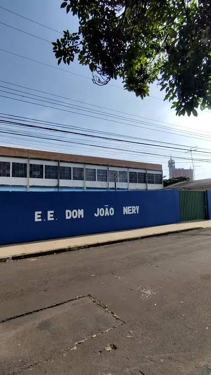

Reserve seu laboratório
Faça seu agendamento de forma rápida e organizada, evitando conflitos de horários.
Fazer uma reservaLaboratórios Disponíveis
Lab 12 - Informática Básica
🖥️ 30 computadores
👥 Até 30 pessoas
Sala 06 - Carrinho
🖥️ 25 computadores
👥 Até 25 pessoas
Lab 13 - Informática
🖥️ 20 computadores
👥 Até 20 pessoas
Sala 11 - Chromebook
🖥️ 25 computadores
👥 Até 25 pessoas
Detalhes da Reserva
Minhas Reservas
Você ainda não possui reservas.
E.E. Dom João Nery
A Escola Estadual Dom João Nery é o ambiente onde este projeto foi desenvolvido como parte da formação dos estudantes na área de tecnologia.
A escola oferece aos alunos um espaço de aprendizagem, desenvolvimento e preparação para novos desafios acadêmicos e profissionais.
O Sistema de Reservas Informáticas foi pensado para ajudar na organização dos laboratórios e facilitar o agendamento das salas.

Educação e Tecnologia
Unindo aprendizado, organização e tecnologia para facilitar o dia a dia escolar.
Sobre o Sistema
Organização
Facilita o agendamento dos laboratórios e ajuda a evitar conflitos de horários.
Tecnologia
Desenvolvido utilizando tecnologias de programação para a web.
Praticidade
Permite consultar e realizar reservas de maneira simples e rápida.
Sobre Nós
Olá! Nós somos Yasmin, Beatriz, Ana Clara e Sofia, estudantes da E.E. Dom João Nery e desenvolvedoras deste projeto.
Este sistema foi criado como parte dos nossos estudos na área de tecnologia e programação, buscando aplicar na prática conhecimentos de desenvolvimento web.
Durante o desenvolvimento do projeto, foram utilizados conhecimentos de HTML, CSS, JavaScript e APIs para criar uma solução simples para o gerenciamento das reservas dos laboratórios.